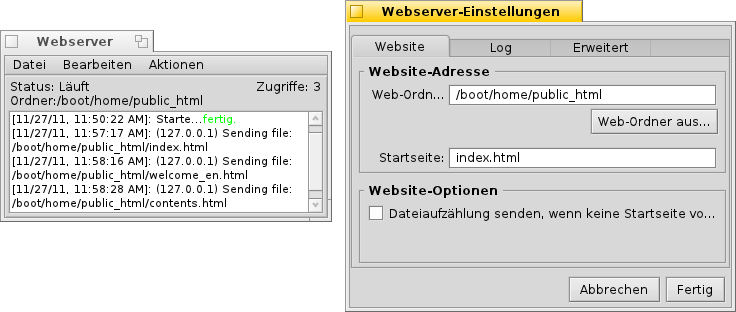

PoorMan
PoorMan
| Deskbar: | ||
| Ort: | /boot/system/apps/PoorMan | |
| Einstellungen: | ~/config/settings/PoorMan Settings |
PoorMan ist ein netter kleiner Webserver, der ausgesprochen einfach einzurichten ist. Er bietet natürlich keine so fortgeschrittenen Funktionen wie eine ausgewachsene Serversoftware; er ist schließlich, wie sein Name PoorMan schon sagt, ein Arme-Leute-Webserver.
Bei seinem ersten Start fragt PoorMan nach dem Ordner, der im Netz publiziert werden soll. Wählt man hier , wird dafür der Ordner /boot/home/public_html angelegt. Als Startseite muss hier eine HTML-Datei mit dem Standardnamen index.html liegen.
PoorMan zeigt sich mit einer einfachen Konsole, die alle Aktivitäten aufzeichnet. Dazu eine Statusanzeige ob der Server läuft, welches Verzeichnis publiziert wird und einen Zugriffszähler. Mit lassen sich die Einstellungen ändern:

Das Einstellungsfenster besteht aus drei Reitern:
Im Reiter kann ein anderer zu publizierender Ordner oder eine andere Startseite angegeben werden oder festgelegt werden, dass die Dateiliste des Ordners übertragen werden soll, falls keine Startseite existiert.
Im Reiter kann man die Aufzeichnung der Ereignisse in der Konsole de/aktivieren oder sie optional in eine eigene Datei umleiten.
Im Reiter lässt sich die maximale Anzahl gleichzeitiger Verbindungen einstellen.
Die Befehle in der Menüleiste des Konsolenfensters sind selbsterklärend. Mit ihnen lässt sich die Konsolenausgabe oder Teile davon speichern, die Konsolenaufzeichnung bzw. Log-Datei leeren, der Server starten und anhalten und der Zugriffszähler zurücksetzen.